Unnan, Shimane: things to do, food and stays
Unnan · Shimane
Unnan
Highlighted on the Shimane map.
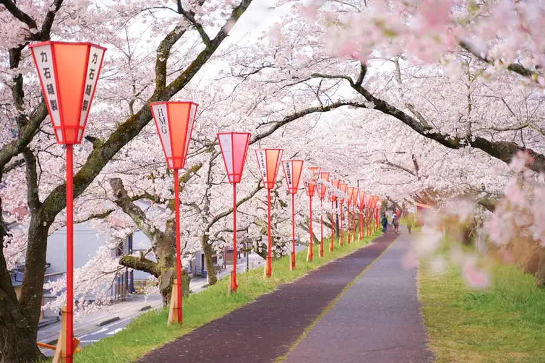
Stay
天然温泉 三刀屋の湯 ドーミーインEXPRESS出雲の國 雲南
Tennen Onsen Mitoya No Yu Dormy Inn EXPRESS Izumo No Kuni Unnan
Inn in Mitoya, Unnan with a sauna and a large communal bath.
RITA 雲南吉田
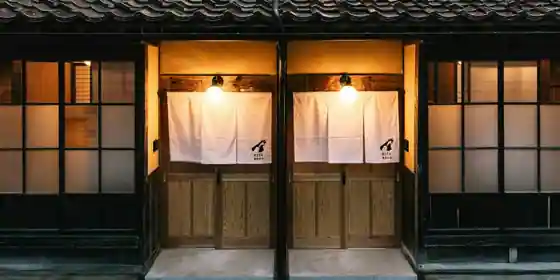
RITA Unnan Yoshida
Inn in Yoshida, Unnan with a sauna.
若槻 吉田奥出雲
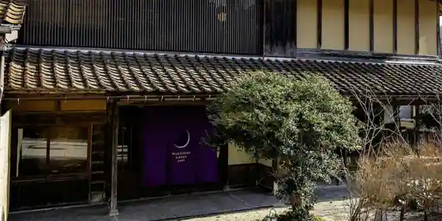
Wakatsuki Yoshida Okuizumo
Inn in Yoshida, Unnan with one group per day.
オトナリ
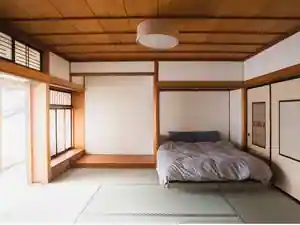
Otonari
Inn in Kisuki, Unnan with a renovated traditional house.
ホテル上代
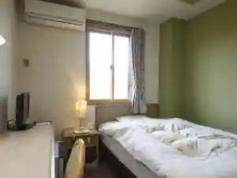
Hotel Kamishiro
Hotel in Mitoya, Unnan; 5-minute drive from Shitsurinyuaru!Matsuemichino IC.
～日頃の疲れを癒し里山リゾートでプチ贅沢を～国民宿舎 清嵐荘
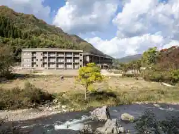
~ Higoro No Tsukare Wo Iyashi Satoyama Resort De Puchi Zeitaku Wo ~ Kokuminshukusha Kiyoshi Arashi So
Family-run minshuku in Yoshida, Unnan with a quiet countryside setting.
出雲の秘湯 海潮温泉 海潮荘 ～日本秘湯の宿会員
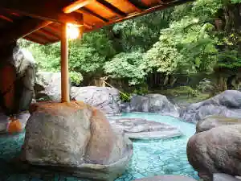
Izumo No Hito Kaicho Onsen Kaicho So ~ Nippon Hito No Yado Kain
Inn at Kaicho Onsen in Daito, Unnan with open-air baths.
Dining
中国四川料理 ドンシュー
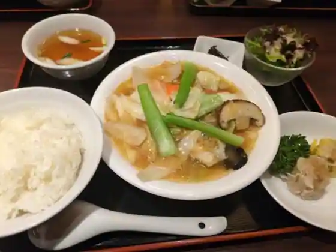
Chugoku Shisenryori Donshu
奥出雲前綿屋 ままたまご
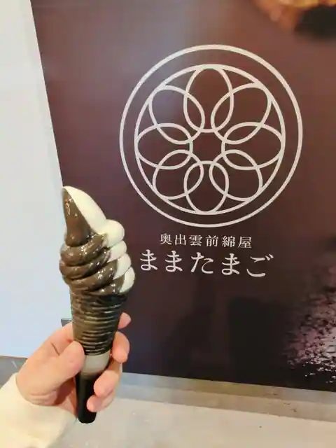
Okuizumo Mae Men Ya Mamatamago
お食事処 おくい
O Shokuji Tokoro Okui
和かな寿司
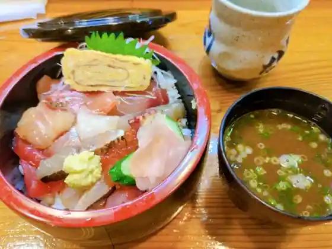
Wa Kana Sushi
奥出雲葡萄園
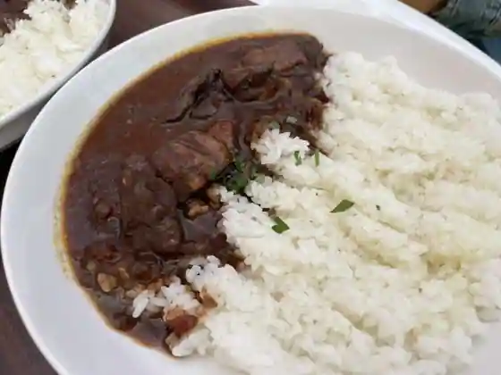
Okuizumo Budo Sono
さくらの里きすき
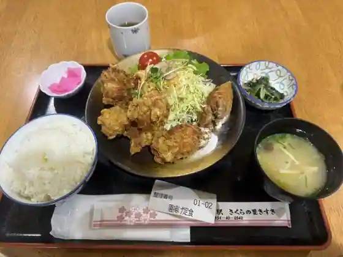
Sakurano Sato Kisuki
むらげ
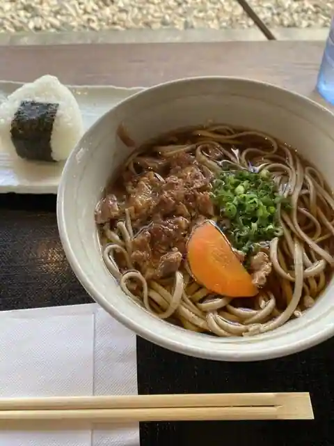
Murage
海潮路
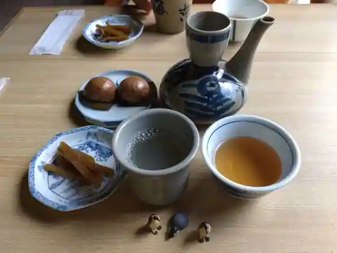
Kaicho Michi
たたらば壱番地
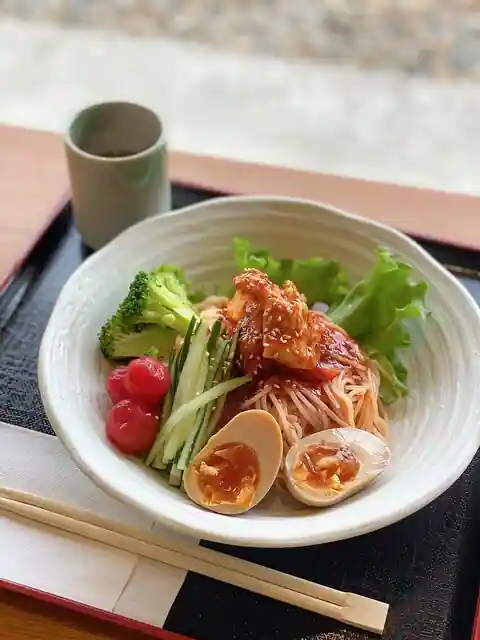
Tataraba Ichiban Chi
海潮温泉 海潮荘
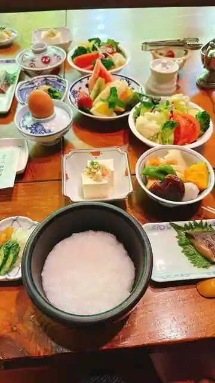
Kaicho Onsen Kaicho So
奥出雲葡萄園 庭カフェ
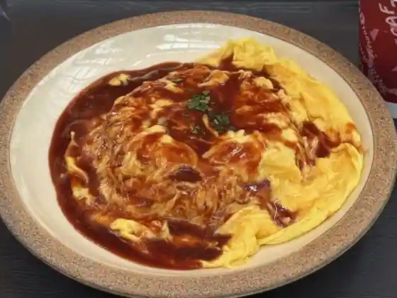
Okuizumo Budo Sono Niwa Cafe
清嵐荘
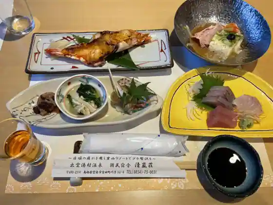
Kiyoshi Arashi So
湯乃上館
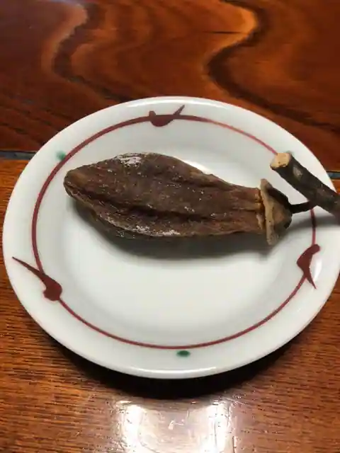
Yu No Ue Kan
杜のパン屋
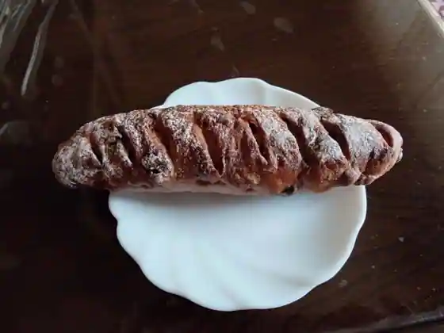
Mori No Bakery Ya
道の駅 おろちの里
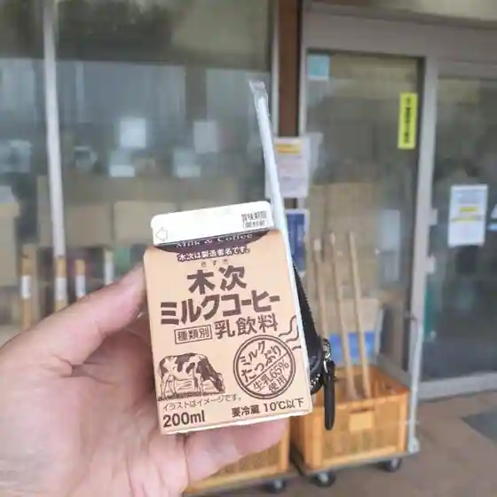
Michi No Eki Orochino Sato
＆CAFE華羅
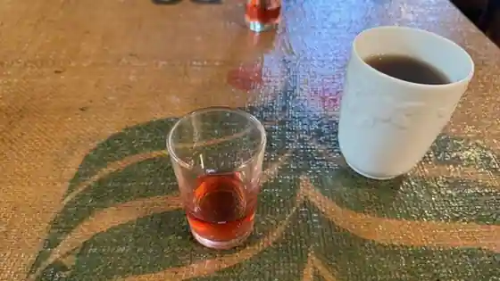
&CAFE Hana Ra
道の駅 掛合の里
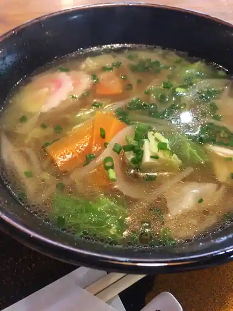
Michi No Eki Kakeya No Sato
多納屋
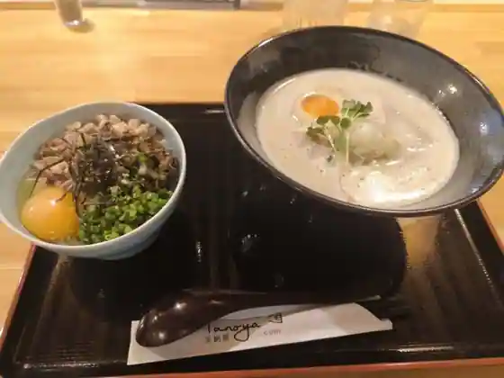
Ta Naya
らあめん市場麺太鼓
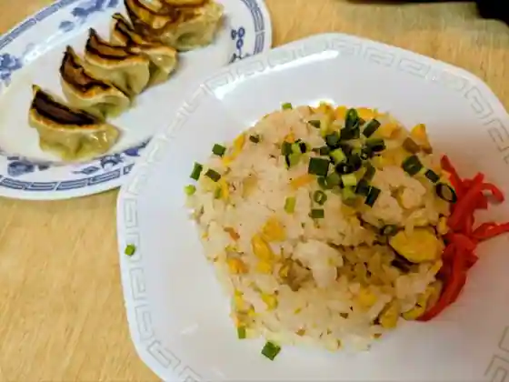
Ramen Shijo Men Taiko
倉田カフェ
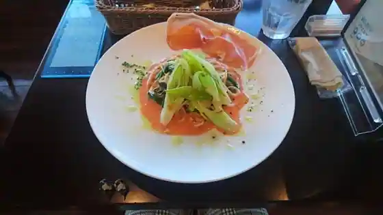
Kurata Cafe
ドライブイン加茂
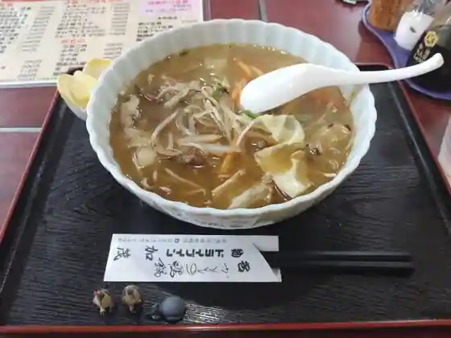
Doraibuin Kamo
薪窯パン アルメ
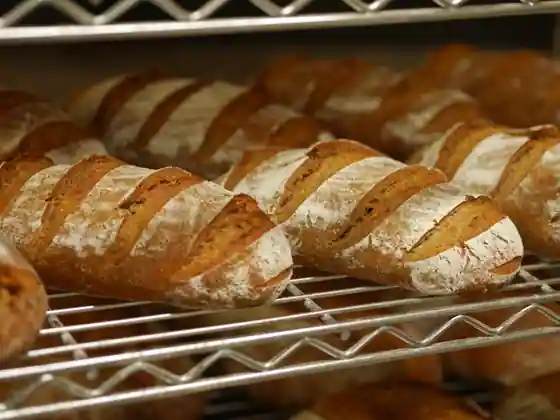
Takigigama Bakery Arume
ドライブイン 王将
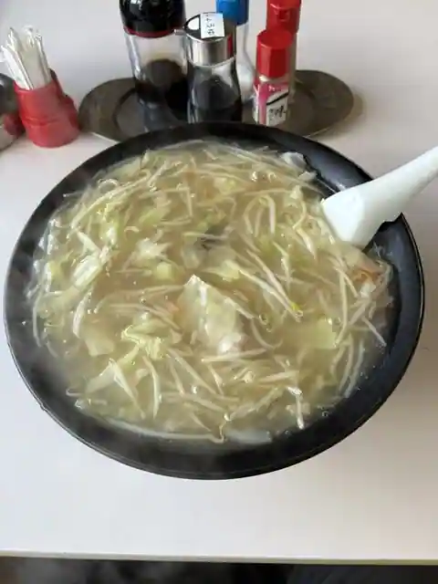
Doraibu Inn Osho
Sights
Tatsugashiragataki
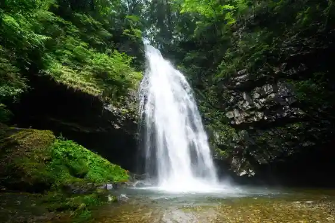
Sugaya Tatara Yamauchi
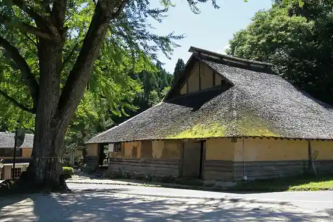
Izumo Yu Village Onsen (Koshu Bath Motoyu Shitsu Hitoshi Baths)
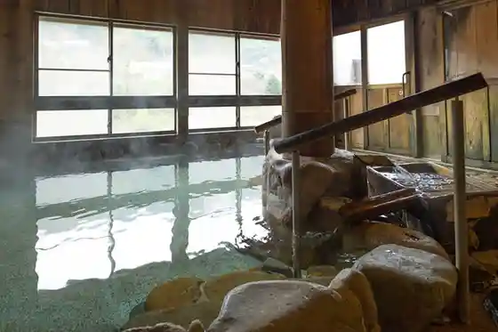
Hii Kawa Teibo Sakura Namiki
Tabe Ie Dozo Gun
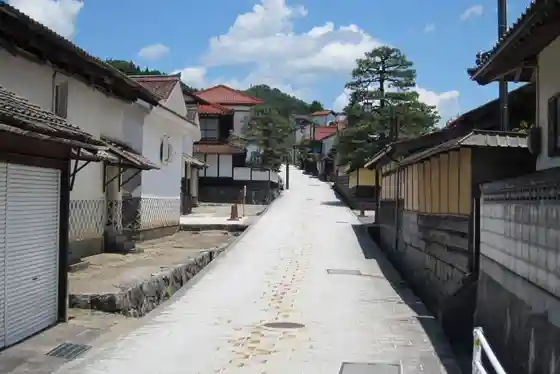
Mitoya Kawa Teibo no Sakura
Kyodai Meiro Doragonmeizu
Hata Onsen Manju Baths
Su Ware Shrine
Roadside Station (Sakura no Sato Kisuki)
Roadside Station Tataraba Ichiban Chi
Okuizumo Budo Sono
Izumo Yu Village Onsen
Yae Taki
Tetsu no History Museum
Tengafuchi
Shiogataira Onsen
Mitoya Fukaya Onsen Fukatani So
Roadside Station (Kakeya Village)
Daito Tanabatamatsuri
Nagai Takashi Memorial Museum
Kiyoshi Arashi So
Kamiku no Togenkyo
Kakeya Mamenaka Center
Yu no Ue Kan
Ishi Sho Garden
Kamo Iwakura Iseki
Okuizumo Mae Men Ya Tessen Do
Kamihara Jinja Burial Mound, Kamihara Shrine
Hachihon Sugi
Mitoya Ozaki Castle Ruins
Daito no Village Kankyokaizen Center Katsura So
Unnan Kamo Bunka Horu (Rameru)
Roadside Station Orochi Village
Kisuki Town Kenko Onsen Center Orochi Yu Ttari Kan
Mine Tera
Kamo Iwakura Iseki Gaidansu
Torokko Ressha Okuizumo Orochi Go
&CAFE Hana Ra
Kaicho Onsen
Unnan Mitoya Bunka Gym Asuparu
Kagura no Yado
Foresutoadobencha Tatara Village
Akashi Midorigaoka Park
Sanno Tera no Tanada
Ashiya Kyo Yamame Village
San Ya Shrine
Mitoya Kawa Kasenjiki Park
Kaicho So
Tonichi to Onsen
Kumomi Falls
Fujiwara Cha Tonya
Daito Park
Iishi Shrine
Genjibotaru (Akagawa Hotaru)
Nichi Kura Castle Ruins
Jokaku Tera
Sukeyo no Ki
Kakeya Shuzo Museum
Komyo Tera
Ume Mado In
Miyata Iseki
Maruko Yama Park
Katsura Workshop
Mine Tera Yuzan So
Sukeyo Yaki Kamishiro Kama
Shieasaikuru (JR Kisuki Ekimae Poto, Kotorietto (Mitoya) Poto)
Unnan Tourist Information (Kotorietto Nai)
Amano Kan
Unnan Yakusho